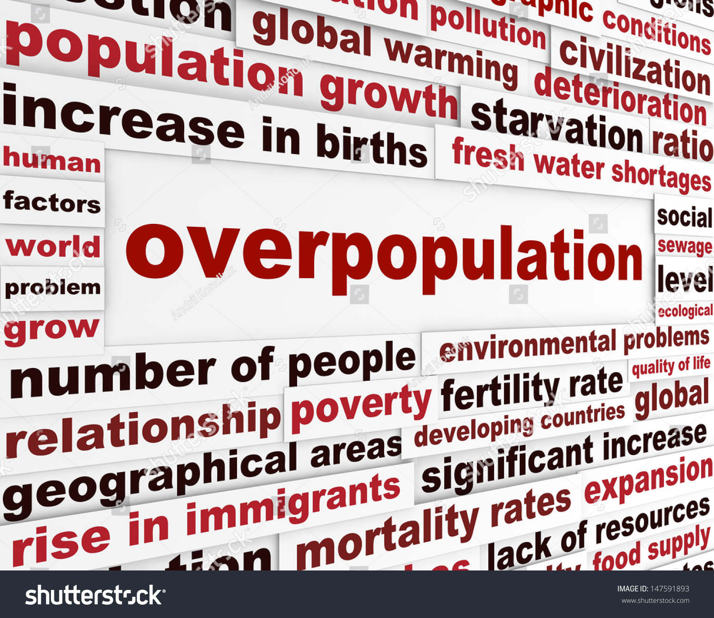

Introduction
Population refers to the total number of people living in a particular area at a given time. It is a fundamental aspect of human society and has significant implications for various fields, including economics, politics, and environmental studies. Population growth is influenced by several factors, such as birth rates, death rates, and migration patterns. Understanding population dynamics is crucial for policymakers and researchers to address challenges such as resource scarcity, urbanization, and social inequality. Population distribution is uneven across the globe, with some regions experiencing rapid growth while others face population decline. Factors like geography, climate, economic development, and cultural practices contribute to these disparities. The study of population, known as demography, involves analyzing data on population size, composition, distribution, and change over time. Demographers use various techniques, including censuses, surveys, and vital statistics, to gather and analyze population data.

Population Growth Trends
Population growth trends vary globally, with some regions experiencing rapid increases, while others face decline. Factors such as fertility rates, life expectancy, and migration patterns contribute to these trends. Exponential growth: The world's population has been growing exponentially over the past few centuries. Rapid increase: The rate of population growth has been particularly rapid since the Industrial Revolution. Uneven distribution: Population growth is not evenly distributed across the globe; some regions experience much faster growth than others. Developing countries: Developing countries tend to have higher population growth rates than developed countries. Urbanization: As populations grow, more people are moving to cities, leading to rapid urbanization. Resource depletion: Population growth can strain resources such as food, water, and energy. Environmental impact: Increased population can contribute to environmental problems like pollution and climate change. Social and economic challenges: Population growth can create social and economic challenges, including poverty, unemployment, and inequality. Population control measures: Many countries have implemented population control measures, such as family planning programs, to address population growth concerns. Demographic transition: The process of population growth and decline is often described as the demographic transition, which involves four stages
Factors Influencing Population Growth
Several factors influence population growth, including economic development, healthcare access, educational opportunities, and cultural practices. Policies promoting family planning and gender equality also play a critical role. Birth rate: The number of births per unit of population. Death rate: The number of deaths per unit of population. Fertility rate: The average number of children born per woman. Infant mortality rate: The number of deaths of infants under one year old per 1,000 live births. Life expectancy: The average age to which a person in a population is expected to live. Economic factors: Economic development can influence population growth through factors such as education, healthcare, and job opportunities. Social factors: Social norms and cultural attitudes towards family size and reproduction can affect population growth. Technological factors: Advances in technology can impact population growth by affecting healthcare, agriculture, and other factors. Environmental factors: Environmental conditions, such as climate and natural disasters, can influence population growth. Government policies: Government policies related to family planning, healthcare, and economic development can significantly impact population growth.
Regional Population Comparison
Population density and growth rates vary significantly across regions. Asia and Africa have the highest growth rates, while Europe and North America are experiencing slower or negative growth due to aging populations and lower birth rates. Population distribution across the globe is highly uneven, with significant regional variations. Here are some key comparisons: Asia: As the most populous continent, Asia accounts for approximately 60% of the world's population. Countries like China and India have immense populations, while smaller nations like Japan and South Korea have relatively high population densities. Africa: Africa is experiencing rapid population growth, with many countries having high birth rates. Nigeria and Ethiopia are among the continent's most populous nations. Europe: Europe has a relatively low population density compared to Asia and Africa. While countries like Germany and France have significant populations, many European nations have experienced population decline in recent decades. North America: The United States and Canada are the two most populous countries in North America, with diverse population distributions across regions. South America: Brazil is the most populous country in South America, followed by Colombia and Argentina. The continent's population is concentrated in urban areas. Oceania: Australia and New Zealand are the two main countries in Oceania, both with relatively low population densities. These regional comparisons highlight the diverse demographic landscapes across the world, with significant implications for economic development, resource management, and social challenges.
Challenges of Overpopulation
Overpopulation leads to several challenges such as resource depletion, environmental degradation, and increased pressure on infrastructure and healthcare systems. Addressing these issues requires sustainable solutions. Overpopulation presents a myriad of challenges for societies worldwide. Some of the most significant include: Resource depletion: Increased demand for resources such as food, water, and energy can strain supplies. Environmental degradation: Overpopulation contributes to pollution, deforestation, and climate change. Poverty and inequality: Overpopulation can exacerbate poverty and inequality, as competition for resources intensifies. Social unrest: Strain on resources and job opportunities can lead to social unrest and conflict. Healthcare challenges: Overburdened healthcare systems may struggle to meet the needs of a growing population. Education challenges: Increased demand for education can strain resources and lead to overcrowding in schools. Housing shortages: Rapid population growth can create housing shortages and drive up costs. Urbanization and infrastructure: Overpopulation can lead to rapid urbanization, placing strain on infrastructure and services. Migration and displacement: As resources become scarce, people may be forced to migrate or be displaced. Economic stagnation: Overpopulation can hinder economic growth by limiting job opportunities and reducing productivity.
Strategies for Managing Population Growth
Managing population growth involves implementing policies such as family planning, promoting education and employment opportunities, and ensuring access to healthcare. These measures aim to stabilize population growth and promote sustainability. Addressing overpopulation requires a multifaceted approach involving: Family planning programs: Providing access to contraception and education about family planning can help reduce birth rates. Economic development: Promoting economic growth and development can lead to lower birth rates as people invest in education and healthcare. Education and awareness: Increasing awareness about the consequences of overpopulation and promoting education, especially for women, can empower individuals to make informed choices. Healthcare improvements: Improving access to healthcare, including maternal and child health services, can reduce mortality rates and contribute to lower birth rates. Sustainable development: Promoting sustainable development practices can help conserve resources and reduce the environmental impact of population growth. Government policies: Governments can implement policies that support family planning, education, and economic development. International cooperation: Addressing overpopulation requires collaboration among countries and international organizations. Cultural and social changes: Promoting cultural and social changes that support smaller family sizes can contribute to population management. Technological advancements: Innovations in technology can help address challenges related to overpopulation, such as developing sustainable agriculture and renewable energy sources. Long-term planning: Effective population management requires long-term planning and strategies that address the underlying causes of overpopulation.
Future Implications
Future population trends will have significant implications for global development. Regions with growing populations will face challenges related to resource management, while areas with declining populations may experience economic stagnation. Population growth will continue to have significant implications for the future, including: Resource scarcity: Increasing demand for resources like food, water, and energy could lead to shortages and conflicts. Environmental degradation: Overpopulation will contribute to climate change, pollution, and deforestation. Economic challenges: Population growth can strain economic systems, leading to poverty, inequality, and social unrest. Urbanization and infrastructure: Rapid urbanization will place pressure on infrastructure and services, such as housing, transportation, and healthcare. Migration and displacement: As resources become scarce, people may be forced to migrate or be displaced. Geopolitical tensions: Competition for resources could lead to increased geopolitical tensions and conflicts. Technological advancements: Technological advancements may help address some of the challenges of population growth, but they may also create new ones. Social and cultural changes: Population growth could lead to significant social and cultural changes, such as shifts in demographics and cultural norms. Global governance: Effective global governance will be essential for addressing the challenges of population growth and ensuring a sustainable future.
Conclusion
Addressing population challenges requires global collaboration, sustainable policies, and effective management strategies. Balancing population growth with resource availability is key to ensuring a prosperous future. Population growth is a complex issue with far-reaching implications for the future. While it has contributed to economic development in some regions, it has also created significant challenges, including resource depletion, environmental degradation, and social unrest. Addressing these challenges requires a multifaceted approach that involves family planning, economic development, education, healthcare, and sustainable development. It is important to recognize that population growth is not solely a problem of developing countries. Developed nations also face demographic challenges, such as aging populations and declining birth rates. Ultimately, the future of humanity depends on our ability to manage population growth in a sustainable and equitable manner. By adopting comprehensive strategies and promoting international cooperation, we can work towards a future where population growth is not a threat but an opportunity for human progress.
References
- World Population Prospects, United Nations
- Global Population Growth and Trends, World Bank
- Population and Sustainability, Environmental Research Journal